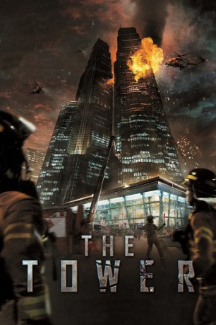

#1642 The Tower - Tödliches Inferno
 
 IMDB-Wertung: 6.6 / 10
IMDB-Wertung: 6.6 / 10  Metascore: 0
Metascore: 0 
Das exklusive "Tower Sky" mitten in Seoul: ein wuchtiger 400-Meter-Gebäudekomplex aus Stahl, Beton und Glas. Die Partystimmung der "White Christmas"-Gäste in den oberen Stockwerken verwandelt sich in nackte Angst, als ein Hubschrauber in das Hochhaus rast. Gasexplosionen zerstören ganze Stockwerke, Feuer breitet sich unerbittlich aus. Abgeschnitten durch ein unaufhaltsames Flammenmeer, versuchen die panischen Überlebenden sich mit allen Mitteln einen Weg nach unten freizukämpfen. Währenddessen setzen verzweifelte Feuerwehrmänner alles daran, den Brand unter Kontrolle zu bringen. Die Lage scheint aussichtslos ...
Jahr: 2012
Dauer: 121 Minuten
FSK: 16
Land: Süd-Korea Studio: Splendid FilmTonspuren:
Untertitel:
Auflösung: 1080p (1920x816) Größe: 6727 MB
Genre: Action, Drama, Komödie
Regisseur: Ji-hoon Kim
Drehbuch: Sang-don Kim, Ji-hoon Kim, Yeong-ah Yoo, Wendee Lee
Soundtrack: Tae-seong Kim
Darsteller:
- Kyung-gu Sol als Captain Kang Young-ki
- Ye-jin Son als Seo Yoon-hee
- Sang-kyung Kim als Lee Dae-ho
 In-kwon Kim als Sergeant Oh Byung-Man
In-kwon Kim als Sergeant Oh Byung-Man- Sung-kee Ahn als Yeouido Fire Station Chief
- In-Pyo Cha als President Jo
- Min-Young Park als Nam-ok - Pregnant Woman
 Cheol-min Park als Head cook
Cheol-min Park als Head cook- Jae-ho Song als Mr. Yoon - Old Man
- Ju-shil Lee als Mrs. Jung - Mr. Yoon's Friend
- Han-wi Lee als Mr. Kim - Church Elder
- Tae-won Kwon als Fire Commissioner Jang
- Guk-Hyang Jeon als Ae-ja
 In-gi Jeong als Cha - Safety Section Head
In-gi Jeong als Cha - Safety Section Head- Bae-soo Jeon als Young-cheol - The Cook
- Jun-seo Park als Aide
- Kim Sung-oh als In-geon
- Lee Joo-ha als Min-jung - The Receptionist
- Ji-han Do als Lee Seon-woo
- Jin Mo als Yeouido Fireman
- Sang-hong Lee als Yeouido Fireman
- Chu Min-ki als Yeouido Fireman
- Kang Poong als Yeouido Fireman
- Chang-Yong Lee als HQ Command Specialist
- Hyun-Sang Kwon als Young-hoon
- Chang-joo Lee als Jo's private secretary
- Eung-soo Kim als Jin
- Jeong-hak Park als Jung
- Yong-soo Park als Park
- Darrel Delfin als Additional Voices
 Joe Thomas als Fire Chief
Joe Thomas als Fire Chief
Datei: X:\HD-Eastern-Modern(N-Z)\Tower - Tödliches Inferno, The (2012, FSK16, 1920x816).mkv seit 29.07.2015
Festplatte: HD Eastern+Western
 Es gibt insgesamt 76 Filme in der Gruppe 'HD-Eastern-Modern(N-Z)'
Es gibt insgesamt 76 Filme in der Gruppe 'HD-Eastern-Modern(N-Z)'